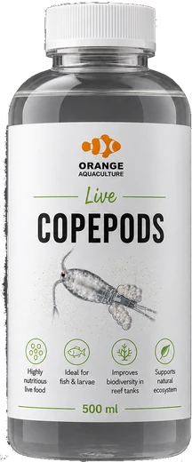

Copepods
Live saltwater pods
The feed finicky fish ask for by name. Seed your refugium, or watch a stubborn mandarin finally start hunting.
- Natural prey for mandarins, wrasses & fry
- Establishes a self-sustaining pod population
- Grazes nuisance film algae while it feeds
500 ml bottleDM for price